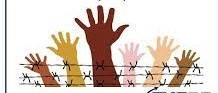
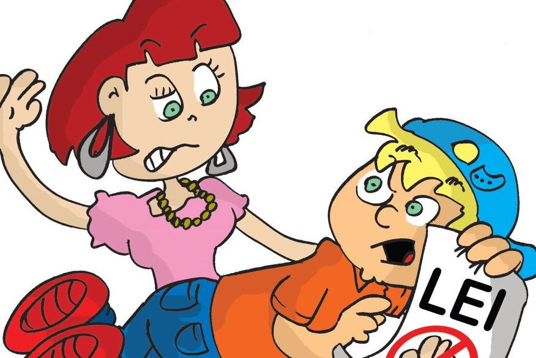
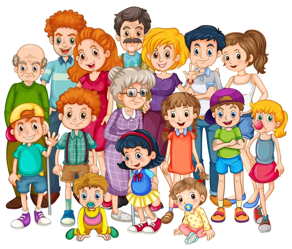
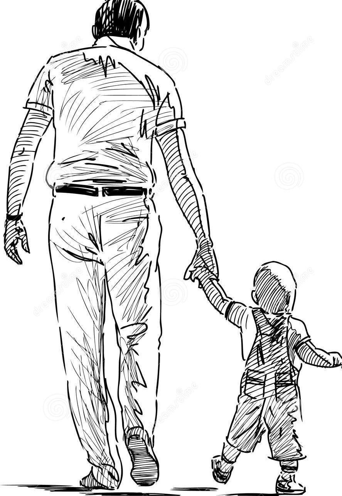

Nesse site sobre os Artigos do ECA, você vai encontrar um pouco sobre artigos e direitos das crianças e adolescntes.
O ECA é o Estatuto da Criança e Adolescenetes que surgiu em (1990), que aborda os direitos das crianças e adolescntes que vivem no brasil.
Criança = pessoa até 12 anos incompletos, não e considerado adolescente; Adolescente = 12 aos 18 anos.
Nenhuma criança ou adolescente será objeto de qualquer forma denegligência, discriminação, exploração, violência, crueldade e opressão, punido na forma da lei qualquer atentado, por ação ou omissão, aos seus direitos fundamentais.
A criança e o adolescente têm direito à liberdade, ao respeito e à dignidade como pessoas humanas em processo de desenvolvimento e como sujeitos de direitos civis,humanos e sociais garantidos na Constituição e nas leis.
O direito à liberdade compreende os seguintes aspectos:
O direito ao respeito consiste na inviolabilidade da integridade física, psíquica e moral da criança e do adolescente, abrangendo a preservação da imagem, da identidade, da autonomia, dos valores, ideias e crenças, dos espaços e objetos pessoais.
É dever de todos velar pela dignidade da criança e do adolescente, pondo-os a salvo de qualquer tratamento desumano, violento, aterrorizante, vexatório ou constrangedor.
Aos pais incumbe o dever de sustento, guarda eeducação dos filhos menores, cabendo-lhes ainda, no interesse destes, a obrigação de cumprir e fazer cumprir as determinações judiciais. A mãe e o pai, ou os responsáveis, têm direitos iguais e deveres e responsabilidades compartilhados no cuidado e na educação da criança, devendo ser resguardado o direito de transmissão familiar de suas crenças e culturas, assegurados os direitos da criança estabelecidos nesta Lei.
Entende-se por família natural a comunidade formada pelos pais ou qualquer deles e seus descendentes. Entende-se por família extensa ou ampliada aquela que se estende para além da unidade pais e filhos ou da unidade do casal, formada por parentes próximos com os quais a criança ou adolescente convive e mantém vínculos de afinidade e afetividade.
A criança e o adolescente têm direito à educação, visando ao pleno desenvolvimento de sua pessoa, preparo para o exercício da cidadania e qualificação para o trabalho, assegurando-se-lhes:
Ao assumir a guarda ou a tutela, o responsável prestará compromisso de bem e fielmente desempenhar o encargo, mediante termo nos autos.
